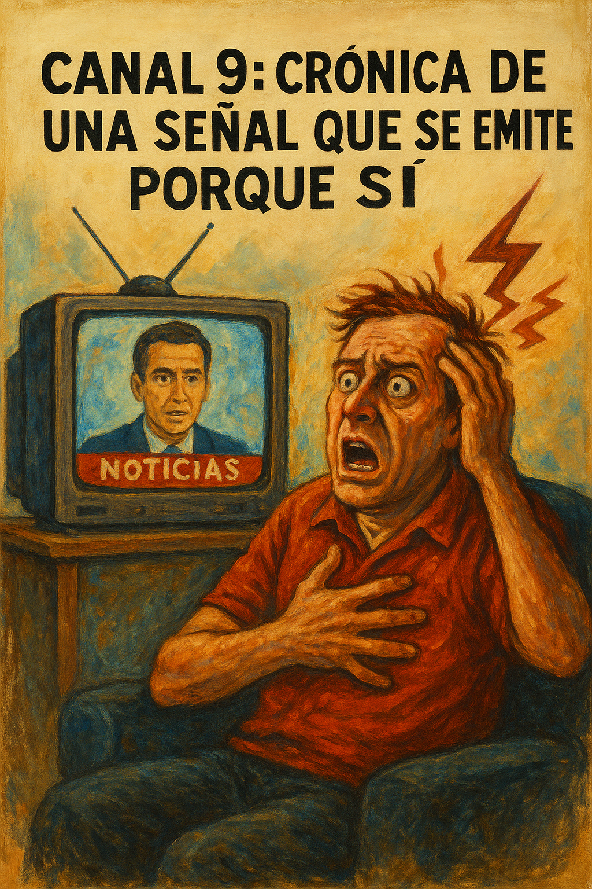

Canal 9: Crónica de una señal que se emite porque sí
El Canal 9 de Mendoza es, perdón por la franqueza, una porquería. No hay otra forma de empezar este artículo sin traicionar la urgencia que me empuja a escribirlo. Su noticiero es pésimo, y el canal en sí deja bastante que desear. Desde que se sancionó la Ley de Medios, surgieron nuevas señales como Acequia TV, un canal estatal que el entonces gobernador Cornejo decidió cerrar, quizás para entregarlo a manos privadas. Nadie en el territorio mendocino pareció lamentar la noticia, salvo, tal vez, quienes trabajaban allí.
Ver Acequia un domingo a las 21 horas era lo más parecido a morir solo en un centro de día. Si uno pudiera imaginar dos imágenes de desolación absoluta, serían: Robert De Niro en El Irlandés, muriendo solo tras una vida de atrocidades, y alguien sin cable ni antena, obligado a ver Acequia. El contenido del canal parecía diseñado para acompañar la soledad, pero no aliviarla.
En Mendoza, los dos canales más importantes son el 7 y el 9. El primero da la impresión de tener profesionales mejor pagos, estudios más equipados y el respaldo del padrino mendocino (vos me entendés). No quiero decir más, no vaya a ser que este sea mi último escrito. El Canal 9, por su parte, está ubicado en el centro de la ciudad y es popular. Tiene dos radios: la 100.9 y la LV10, que suenan en talleres, consultorios, hospitales, taxis melancólicos y en el sector más nacional y popular de Mendoza.
El oyente típico de la 100.9 es un personaje entrañable: llama para pedir canciones en plena era de Spotify y YouTube. Saluda al locutor con apodos que van desde “flaco” hasta “pelotudo”, se presenta como “Beto de Maipú”, menciona que está con “el chanchi en la construcción”, saluda “a todos los que me conocen” y pide “Provócame” de Chayanne. Cierra con la frase sagrada: “La shadio está muy buena”. Ese es el público, y ese es el espíritu que sostiene al grupo de medios encabezado por Canal 9.
Ahora sí, entremos de lleno. El mendocino no tiene muchas opciones: elige entre Canal 7 y Canal 9. Y Canal 9 parece operar bajo la lógica de “nos van a mirar igual, hagamos lo que sea”. El contenido es pobre. El noticiero y los programas locales carecen de sustancia. ¿Qué sería del canal sin médicos ni enfermedades? Porque si hay algo que nunca falta es una enfermedad. No hay tópico médico que no se haya tocado, ni especialista que no haya pasado por el estudio: traumatólogos, nutricionistas, oncólogos, dentistas... todos. Si sos hipocondríaco, te recomiendo cambiar de canal. Vas a sentir que ya estás muerto, sufriendo alguna de las dolencias que te presentan como si fueran el menú del día.
Y si estás internado, sin cable, con una tele de aire, la cosa se pone peor. Te puede tocar ver “Cine Suspiro” un sábado a las tres de la tarde, con películas como Bajo la misma estrella, Relato al destino (también conocida como Oficial y caballero), La boda de mi mejor amigo, o —si tenés muchísima suerte, como una gracia divina del Señor— enganchar Hércules vigila, el caballito de batalla de la emisora. Una programación que parece diseñada no para entretener al paciente, sino para que se levante, se saque la vía y se dé el alta por voluntad propia.
El plato fuerte del canal es el noticiero. Es lo que el mendocino sintoniza para enterarse de lo que pasa en la provincia, cosas que los canales nacionales no cubren. Las ediciones son una peor que la otra. En la mañana, el movilero muerto de frío informa si hace frío o calor, mostrando autos. Después, te leen los títulos de los diarios, aunque nadie los compre. Como en la vieja Galería Piazza, donde la gente leía los clasificados desde la vidriera.
En la primera y segunda edición, hay una señora simpática que parece una tía que se viste raro y quiere ser graciosa, pero no le sale. Tampoco la ayudan. Está también el señor del clima, Jara, cuya utilidad es inversa: si dice que va a llover, salgo sin paraguas. Nunca falla.
El contenido es monótono: ministros, economistas, fiscales, abogados. Si tenés alguna de esas profesiones, es casi seguro que alguna vez saliste en el noticiero. Las transiciones entre notas son brutales: una nube blanca invade la pantalla y, al terminar la nota, el protagonista sigue hablando en cámara lenta, como si estuviera teniendo un ACV, hasta que vuelven al estudio con la música del noticiero.
El formato no cambia. Lo único que varía son las noticias. En la tercera edición, cambian los panelistas y aparece el señor Hidalgo, un conductor que ama escuchar su propia voz. Interrumpe sin pudor, y no le importa que la señora esté esperando que termine el noticiero para ver la novela. Él entrega el programa cuando le parece oportuno.
Cierre
Canal 9 es un fenómeno mendocino que se sostiene por inercia, por falta de competencia y por una audiencia cautiva que, entre resignada y nostálgica, sigue sintonizando. Es un canal que no mejora porque no necesita hacerlo. Y eso, en sí mismo, es una tragedia cultural. Pero también es un espejo: de nuestras costumbres, nuestras carencias y nuestras formas de sobrevivir al tedio. Porque si algo queda claro, es que en Mendoza, incluso la televisión puede ser una forma de resistencia... o de castigo.